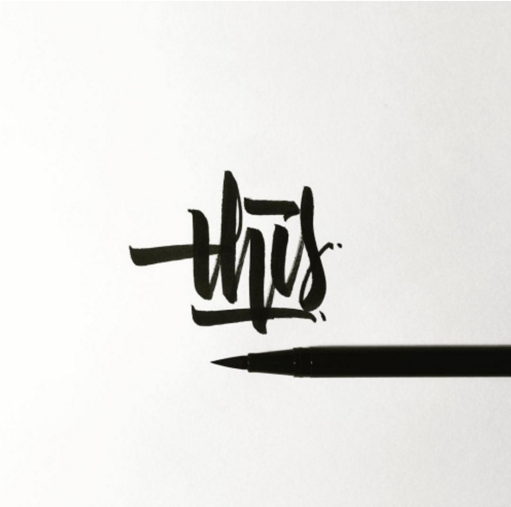
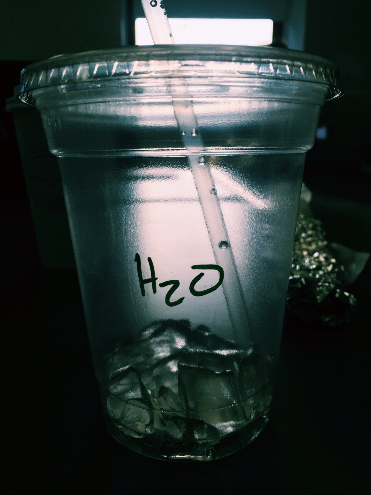

process of thoughts
Что? Где? Когда?
 
Thinking in progess...
My first step was creating a tumblr to pin all the images that visually appeal to me. Most of them share common aesthetics such as colors and objects present in the picture.
personal blog
how do materials influence trends?
where do trends come from?
why do we like what we like?
To watch
project 1
project 2
project 3
Хочу и буду